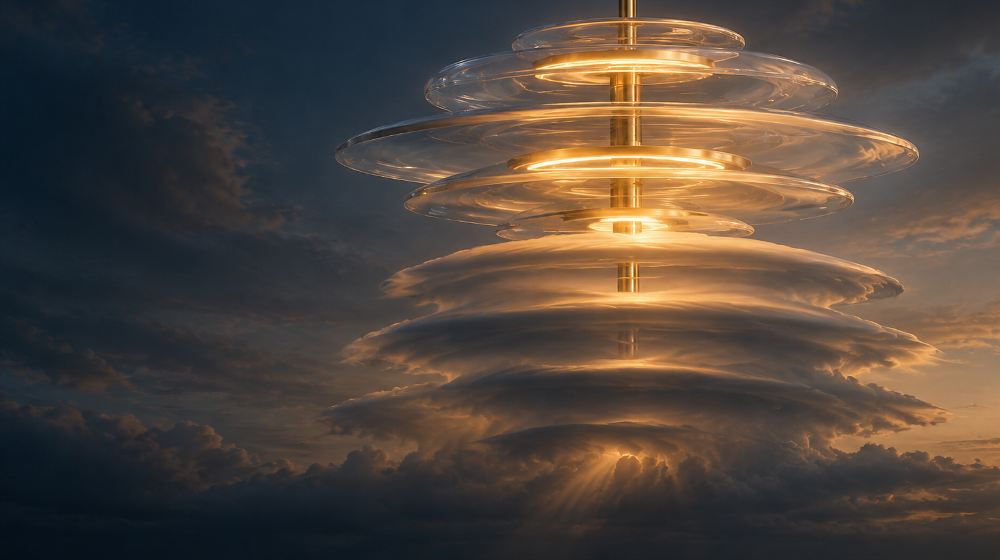

← Les 7 Raisons · Design tool ·
LES 7 RAISONS
Compose a cloud of light, stratum by stratum.

CompanyStudio Incandescence SAS
DesignerAlexandre Kolinka
RoleLighting & Parametric Designer
ProjectLes 7 Raisons
PartDomes + halos configurator
Date17.08.2026
Parametric configurator · Front elevation
Tune the breathing of the cloud
Every dome bears flat across the full width of its halo before it curves : it can never cover its own ring, whatever diameter is chosen. A dome wider than the one below, on the other hand, caps it — and that is what nests the cloud. The geometric constraint only applies where two shells genuinely overlap.
Pas 44 mm
Échelle 1:—
No interpenetration